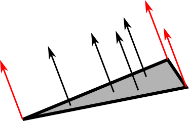
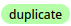

Lezione 9
Forme avanzate, debugging
Maurizio Tomasi maurizio.tomasi@unimi.it
Axis-aligned boxes
Axis-aligned boxes
La forma cubica non è molto interessante di per sè, ma si presta ad alcune ottimizzazioni molto semplici.
A causa del suo scopo particolare, tratteremo il caso dei cubi usando convenzioni diverse da quelle fatte per le sfere ed i piani:
- Non ci limiteremo al cubo di lato unitario con vertice nell’origine…
- …ma assumeremo che le facce siano parallele ai piani coordinati.
Queste assunzioni sono indicate in letteratura col termine axis-aligned box (AAB).
Rappresentazione in memoria
Un parallelepipedo con gli spigoli allineati lungo gli assi xyz può essere definito dalle seguenti quantità:
- Il valore minimo e massimo delle x;
- Il valore minimo e massimo delle y;
- Il valore minimo e massimo delle z.
Equivalentemente, si possono memorizzare due vertici opposti del parallelepipedo, P_m (valori minimi di x, y e z) e P_M (valori massimi).
Intersezione raggio-AAB
Scriviamo il raggio come r: O + t \vec d.
Il calcolo è molto simile a quello fatto per il piano, se si considera una dimensione alla volta:


Intersezione raggio-AAB
Scriviamo con F_i il generico punto del piano perpendicolare alla direzione i-esima (sei piani in tutto), che avrà coordinate
F_0 = (f_0^{\text{min}/\text{max}}, ?, ?), \quad F_1 = (?, f_1^{\text{min}/\text{max}}, ?), \quad F_2 = (?, ?, f_2^{\text{min}/\text{max}}).
Lungo la coordinata i-esima si intersecano due piani:
O + t_i \vec d = F^{\text{min}/\text{max}}_i\quad\Rightarrow\quad t_i^{\text{min}/\text{max}} = \frac{f_i^{\text{min}/\text{max}} - O_i}{d_i}.
Intersezione raggio-AAB
Ogni direzione produce due intersezioni, quindi in totale si hanno sei potenziali intersezioni (una per ogni faccia del cubo).
Ma non tutte le intersezioni sono corrette: esse sono calcolate per l’intero piano infinito su cui giace la faccia del cubo.
Occorre quindi verificare per ciascun valore di t se il punto P corrispondente stia effettivamente su una delle facce del cubo.
Intersezione raggio-AAB
- Nel caso dell’immagine precedente, in cui il raggio interseca il parallelepipedo, gli intervalli [t^{(1)}_i, t^{(2)}_i] posseggono un tratto in comune tra loro:

- L’intersezione tra gli intervalli è un intervallo i cui estremi corrispondono ai punti di intersezione del raggio con l’AAB.
Intersezione raggio-AAB
- Nel caso in cui il raggio manchi il parallelepipedo, gli intervalli [t^{(1)}_i, t^{(2)}_i] sono disgiunti tra loro:

- Se quindi l’intersezione degli intervalli per i tre assi dà l’insieme vuoto, il raggio non colpisce l’AAB.
Bounding boxes
Complessità del rendering
Settimana scorsa abbiamo implementato il tipo
World, che contiene una lista di oggettiQuando si calcola una intersezione con un oggetto,
World.ray_intersectiondeve iterare su tutte leShapediWorldSe si decuplica il numero di
Shape, decuplica anche il tempo necessario a produrre un’immagine……ma già per risolvere l’equazione del rendering in casi semplici possono volerci anche ore!

Questa immagine contiene tre forme geometriche (due piani e una sfera), ed è stata calcolata in ~156 secondi.
Moana island scene

Ottimizzazioni
Con la nostra implementazione di
World, il tempo necessario per il calcolo di un’immagine è all’incirca proporzionale al numero di intersezioni tra raggi e forme.Ma scene realistiche contengono moltissime forme!
Moana island scene è una scena composta da ~15 miliardi di forme base. Il tempo del rendering sarebbe dell’ordine di 25 000 anni!
Esistono però tecniche di ottimizzazione che consentono di ridurre molto il numero di intersezioni da calcolare. Una di queste si basa sugli axis-aligned bounding boxes
Axis-aligned bounding box
Gli axis-aligned bounding box (AABB) sono degli AAB che delimitano il volume occupato da oggetti.
Sono molto usati nella computer graphics come meccanismo di ottimizzazione.
Il principio è il seguente:
- Per ogni forma nello spazio si calcola il suo AABB;
- Quando si deve determinare l’intersezione tra un raggio e una forma, si verifica prima se il raggio interseca l’AABB;
- Se non lo interseca, si passa alla forma successiva, altrimenti si procede al calcolo dell’intersezione.

Utilità degli AABB
Gli AABB sono utili solo per scene complesse, formate da molti oggetti non banali. Per scene semplici possono al contrario rallentare il rendering.
Sono però molto utili con le mesh di triangoli e con oggetti CSG complessi.
Se voleste supportare gli AABB nel vostro ray-tracer, dovreste aggiungere al tipo
Shapeun membroaabbda usare all’interno diShape.rayIntersection:
Triangoli e mesh di triangoli
Modellizzazione 3D

Scanner 3D

Stanford bunny (1994)

(Modello ottenuto dalla scansione di una statuetta di ceramica)
Triangoli
I triangoli sono la forma geometrica più usata nei programmi di modellizzazione e rendering 3D, per le molte loro proprietà:
- Sono la superficie piana con il minor numero di vertici (→ efficienti da memorizzare).
- La loro rappresentazione nello spazio è univoca (per tre punti passa uno e un solo triangolo planare).
- La loro superficie è parametrizzabile in coordinate (u, v) in forma molto semplice.
- Superfici complesse possono essere rappresentate come unione di più triangoli.
Coordinate baricentriche
Le coordinate baricentriche sono state proposte da Möbius nel 1827, ed esprimono i punti di un piano passante per i punti A, B, C mediante l’espressione
P(\alpha, \beta, \gamma) = \alpha A + \beta B + \gamma C,
dove \alpha, \beta, \gamma \in \mathbb{R} sono le coordinate baricentriche.
Le coordinate baricentriche risultano molto utili per caratterizzare il triangolo di vertici A, B, C: il punto P è interno al triangolo se e solo se
0 \le \alpha \le 1,\quad 0 \le \beta \le 1,\quad 0 \le \gamma \le 1, \quad \alpha + \beta + \gamma = 1.
Coordinate nei triangoli
La condizione \alpha + \beta + \gamma = 1 fa sì che i punti di un triangolo siano caratterizzati da due gradi di libertà, come dev’essere per una superficie bidimensionale.
L’uguaglianza nelle prime tre disequazioni vale per i punti lungo il bordo del triangolo.
Usando l’ultima uguaglianza, si ottiene una forma più significativa:
P(\beta, \gamma) = A + \beta(B - A) + \gamma(C - A) = A + \beta \vec v_{AB} + \gamma \vec v_{AC},
che esprime P come A più uno spostamento verso B e uno verso C.

Coordinate nei triangoli
Si può dimostrare che le coordinate baricentriche di un punto P sono legate all’area \sigma del triangolo e alle aree dei tre sotto-triangoli aventi come vertice il punto P e due dei vertici:
\alpha = \frac{\sigma_1}\sigma = 1 - \frac{\sigma_2 + \sigma_3}\sigma, \quad \beta = \frac{\sigma_2}\sigma, \quad \gamma = \frac{\sigma_3}\sigma.
Se si assegna segno negativo alle aree che sono fuori dal triangolo, queste equazioni valgono per qualsiasi punto sul piano in cui giace il triangolo.
Esempio interattivo
Intersezione con raggi
Vediamo ora come usare le coordinate baricentriche per calcolare efficientemente l’intersezione tra un triangolo e un raggio.
A differenza di quanto fatto con le sfere e i piani, in questo caso non adotteremo un sistema di riferimento semplificato. Il motivo sarà chiaro quando spiegheremo le mesh di triangoli.
Identificheremo quindi un triangolo tramite le coordinate dei tre punti A, B, C (nove valori floating-point).
Il problema analitico
Consideriamo il raggio r(t): O + t \vec d e il punto generico P(\beta, \gamma) del triangolo. L’intersezione è data da
A + \beta (B - A) + \gamma (C - A) = O + t \vec d,
con il vincolo 0 \leq (\beta, \gamma) \leq 1.
Riordiniamo l’equazione in modo da spostare le tre incognite \beta, \gamma e t sulla sinistra:
\beta (B - A) + \gamma (C - A) - t \vec d = O - A.
Forma matriciale
L’equazione che abbiamo ottenuto è
\beta (B - A) + \gamma (C - A) - t \vec d = O - A,
che è un’equazione vettoriale nelle tre componenti x, y, z.
In forma matriciale, il sistema si riscrive così:
\begin{pmatrix} b_x - a_x& c_x - a_x& d_x\\ b_y - a_y& c_y - a_y& d_y\\ b_z - a_z& c_z - a_z& d_z\\ \end{pmatrix} \begin{pmatrix} \beta\\\gamma\\t \end{pmatrix} = \begin{pmatrix} o_x - a_x\\o_y - a_y\\o_z - a_z \end{pmatrix}.
Soluzione analitica
La soluzione dipende dal determinante della matrice M:
\det M = \det \begin{pmatrix} b_x - a_x& c_x - a_x& d_x\\ b_y - a_y& c_y - a_y& d_y\\ b_z - a_z& c_z - a_z& d_z\\ \end{pmatrix},
che deve essere diverso da zero, altrimenti il raggio è parallelo al piano del triangolo.
La soluzione si ottiene facilmente con la regola di Cramer, che è inefficiente nel caso generale ma adeguata per matrici 3×3 come è il caso qui.
Soluzione analitica
Ovviamente, una volta ottenuta la soluzione è necessario verificare che
t_\text{min} < t < t_\text{max}, \quad 0 \leq \beta \leq 1, \quad 0 \leq \gamma \leq 1.
La normale del triangolo si può ottenere facilmente dal prodotto vettoriale tra i due vettori allineati con i lati:
\hat n = \pm (B - A) \times (C - A),
dove il segno è determinato dalla direzione del raggio.
Le coordinate (u, v) possono essere poste uguali a (\beta, \gamma).
Mesh di triangoli
Moana island scene
Moana island scene


The challenges of Releasing the Moana Island Scene (Tamstorf & Pritchett, EGSR 2019)
Mesh di triangoli
Le scene viste nelle slide precedenti sono formate dalla combinazione di molte forme semplici.
Mantenere in memoria una lista di forme semplici richiede una serie di accorgimenti non banali.
Oggi discuteremo delle mesh di triangoli, in cui la forma elementare è appunto un triangolo planare.
Memorizzare triangoli
Abbiamo visto come implementare il codice per calcolare l’intersezione tra raggio e triangolo nel caso generale in cui il triangolo sia codificato tramite i suoi tre vertici A, B e C.
Non abbiamo seguito l’approccio usato per sfere e piani di scegliere una forma «standard» (es., un triangolo sul piano xy), perché questo avrebbe richiesto di memorizzare una trasformazione 4×4 e la sua inversa, per un totale di 32 numeri floating-point (128 bytes a precisione singola).
Memorizzare le tre coordinate di un triangolo richiede solo 3×3×4 = 36 byte…
…ma si può fare di meglio!
Memorizzazione di mesh
In una mesh di triangoli si memorizzano i vertici in una lista ordinata P_k, con k = 1\ldots N.
I triangoli sono rappresentati da una terna di indici interi i_1, i_2, i_3 che rappresenta la posizione dei vertici P_{i_1}, P_{i_2}, P_{i_3} nella lista ordinata.
Se si usano numeri interi a 32 bit per memorizzare gli indici, ogni triangolo richiede 3×4 = 12 bytes.
Questo è vantaggioso se un vertice è condiviso da più triangoli, che è il caso generale.
Modello: 44.000 vertici, 80.000 triangoli.
Normali

Un triangolo è una superficie piana, ed ogni punto della sua superficie possiede quindi la medesima normale \hat n.
Nel caso di mesh di triangoli, si possono usare le coordinate baricentriche del triangolo per simulare una superficie liscia: ciò è utile soprattutto quando la mesh è ottenuta dalla discretizzazione di una superficie liscia.
Smooth shading
Nel momento in cui si approssima una superficie liscia occorre calcolare sia i vertici dei triangoli che le normali sui vertici.
In corrispondenza del punto P definito da \alpha, \beta, \gamma si assegna la normale
\hat n_P = \alpha \hat n_1 + \beta \hat n_2 + \gamma \hat n_3.
Coordinate (u, v)
Nel caso di una mesh ci sono infiniti modi possibili per creare una mappatura (u, v) sulla superficie.
Nelle mesh si fa in modo che ogni triangolo copra una porzione specifica dell’intero spazio [0, 1] \times [0, 1].
Programmi di modellizzazione 3D come Blender permettono di modificare la mappatura (u, v) di ogni triangolo.

Wavefront OBJ
È un formato molto semplice da caricare e utilizzato per memorizzare mesh (non solo di triangoli).
Esempio (inizio del modello
minicooper.obj):# Vertexes v 20.851225 -39.649834 32.571609 v 20.720263 -39.659435 32.675613 v 20.589304 -39.649834 32.571609 … # Normals vn -0.000006 38.811405 3.583478 vn -0.000006 38.811405 3.583478 vn -0.000006 38.811405 3.583478 … # Triangles («faces») f 3//3 2//2 1//1 f 4//4 3//3 1//1 f 5//5 4//4 1//1
File OBJ
Il modo più comodo di visualizzarli è usare Blender, ovviamente! Sotto Linux potete anche impiegare
openctm-tools, che è più agile (il comandoctmviewer NOMEFILEvisualizza un file OBJ in una finestra interattiva).Il sito di J. Burkardt contiene molti file OBJ scaricabili liberamente (il modello della Mini Cooper è preso da lì).
Intersezione con raggi
Il calcolo dell’intersezione tra una mesh e un raggio non è semplice da implementare.
Il problema è che gran parte del tempo richiesto per calcolare la soluzione dell’equazione del rendering viene speso per l’intersezione tra raggi e forme.
All’aumentare delle forme aumenta necessariamente anche il tempo di calcolo.
AABB e mesh
Gli AABB sono perfetti per essere applicati a mesh di triangoli. (In questo caso non si applicano ovviamente ai singoli triangoli, ma alla mesh nel suo complesso).
Al momento del caricamento di una mesh, si può calcolare il suo AABB calcolando il valore minimo e il valore massimo delle coordinate di tutti i vertici.
Nel caso dell’albero di Oceania, l’intersezione tra un raggio e i 18 milioni di triangoli avverebbe solo per quei raggi effettivamente orientati verso quell’albero.
Oltre le AABB
Non è però sempre sufficiente usare gli AABB per le mesh di triangoli.
Sovente le scene sono occupate quasi completamente da un oggetto complesso, e in questo caso gli AABB non portano alcun vantaggio (è il caso dell’immagine precedente).
È però possibile basarsi sull’idea degli AABB per implementare ottimizzazioni più sofisticate: quelle più usate impiegano i KD-tree e i BVH. Vedere il libro di Pharr, Jakob & Humphreys.
Debugging
Introduzione al debugging
Settimana scorsa avete corretto il vostro primo bug, che riguardava l’errato orientamento delle immagini salvate dal vostro codice.
In generale un bug è un problema nel programma che lo fa funzionare in modo diverso da come ci si aspetta
È molto importante avere un approccio scientifico alla gestione dei bug! Nelle prossime slide vi darò alcune indicazioni generali
Difetto, infezione e fallimento
Il bellissimo libro di Zeller Why programs fail: a guide to systematic debugging spiega la scoperta di un bug come la combinazione di tre fattori:
- Difetto: un errore nel modo in cui è scritto il codice
- Infezione: un certo input “attiva” il difetto ed altera il valore di alcune variabili rispetto al caso atteso
- Fallimento: l’esito del programma è sbagliato, o perché i risultati sono errati, o perché il programma va in crash
Il bug sta nel difetto iniziale, ma se non c’è infezione o non c’è fallimento è difficile accorgersene!
Un esempio da TNDS
Nel corso di TNDS si deve implementare un codice che calcoli il valore di
\int_0^\pi \sin x\,\mathrm{d}x
usando la formula di Simpson:
\int_a^b f(x)\,\mathrm{d}x \approx \frac{h}3 \left[f(a) + 4\sum_{i=1}^{n/2} f\bigl(x_{2i-1}\bigr) + 2\sum_{i=1}^{n/2 - 1} f\bigl(x_{2i}\bigr) + f(b)\right].
Spesso l’implementazione è errata nonostante il risultato sia corretto (\int = 2)!
\int_a^b f(x)\,\mathrm{d}x \approx \frac{h}3 \left[f(a)+ {\color{red}{4}}\sum_{i=1}^{n/2} f\bigl(x_{2i-1}\bigr) + {\color{red}{2}}\sum_{i=1}^{n/2 - 1} f\bigl(x_{2i}\bigr) + f(b)\right].
Spesso gli studenti scambiano il 4 con il 2.
Questo porta a una infezione: il valore dell’espressione tra parentesi quadre è sbagliato.
Ciò porta a un fallimento: il risultato dell’integrale è sbagliato.
Di tutti i casi, questo è il più semplice: è immediato accorgersi del problema!
\int_a^b f(x)\,\mathrm{d}x \approx \frac{h}3 \left[f(a)+ 4\sum_{i=1}^{\color{red}{n/2}} f\bigl(x_{2i-1}\bigr) + 2\sum_{i=1}^{\color{red}{n/2 - 1}} f\bigl(x_{2i}\bigr) + f(b)\right].
A volte gli studenti terminano una delle due sommatorie troppo presto (dimenticano l’ultimo termine) oppure troppo tardi (aggiungono un termine in più).
Nel caso di \int_0^\pi \sin x\,\mathrm{d}x, l’ultimo termine della sommatoria è per x \approx \pi, quindi è molto piccolo: c’è una infezione, ma se si stampano poche cifre significative a video può essere che il risultato sia arrotondato al valore giusto, e non ci sia quindi un fallimento.
\int_a^b f(x)\,\mathrm{d}x \approx \frac{h}3 \left[{\color{red}{f(a)}}+ 4\sum_{i=1}^{n/2} f\bigl(x_{2i-1}\bigr) + 2\sum_{i=1}^{n/2 - 1} f\bigl(x_{2i}\bigr) + {\color{red}{f(b)}}\right].
A volte gli studenti dimenticano di sommare f(a) e/o f(b), o li moltiplicano per 2 o per 4.
Nel caso però di \int_0^\pi \sin x\,\mathrm{d}x, il valore dell’espressione tra parentesi quadre è comunque giusto perché f(0) = f(\pi) = 0.
In questo caso c’è un difetto ma non c’è una infezione né un fallimento: è il caso più difficile da individuare!
Issue duplicate
È molto comune che un medesimo difetto porti a fallimenti diversi: ciò dipende infatti dai dati di input, dal tipo di azione che si esegue col programma, etc.
È quindi molto comune che gli utenti aprano issue diverse che però sono causate dal medesimo difetto.
Esempio: un crash in Julia è causato dalla combinazione di due issue già segnalate in precedenza, che però a prima vista non sembravano correlate.
GitHub consente di assegnare l’etichetta Duplicated alle issue: 
Come segnalare issue
Quando si osserva un fallimento e si vuole aprire una issue, bisogna indicare:
- Lista di azioni che hanno portato al fallimento (inclusi tutti gli input!)
- Output del programma
- Descrizione del comportamento atteso e di quello invece osservato
Questo perché lo sviluppatore deve poter riprodurre il fallimento per individuare poi il difetto che l’ha causato.
Se un utente vi segnala una issue senza che alcune di queste cose siano chiare, non fatevi scrupoli a chiedere maggiori dettagli.
GitHub consente di configurare un modello per le issue
Individuare difetti scientificamente (Zeller)
- Osservare/riprodurre un fallimento
- Formulare un’ipotesi sul difetto che ha causato il fallimento
- Usare l’ipotesi per fare una predizione
- Verificare l’ipotesi con esperimenti e ulteriori osservazioni:
- Se l’ipotesi è confermata, raffinare la predizione
- Se l’ipotesi è invalidata, cercarne una alternativa
- Ripetere i passi 3 e 4 finché l’ipotesi non può più essere migliorata